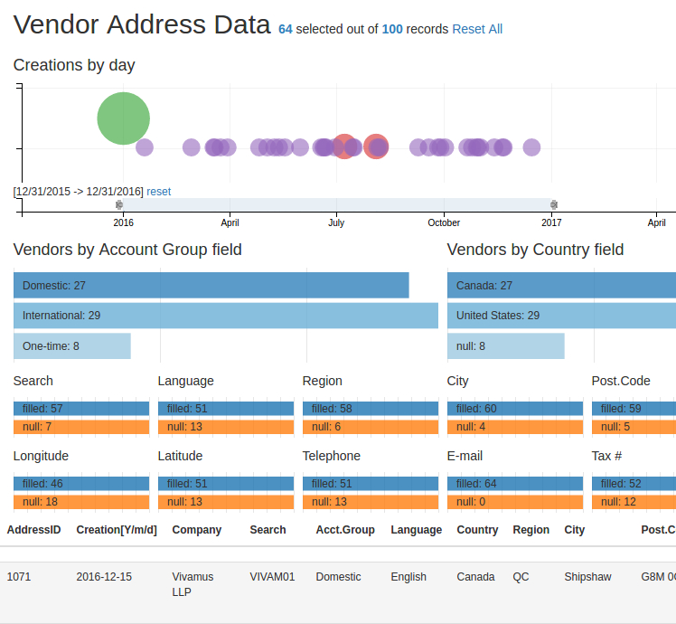

Visualizing Missing Values of Master Data
by Mark Alabanza, MBA, BSAc, CISA
2016 Oct 01
Click here for a live demo of the visualization. Please let me know of any issues in loading the web page.
Visualizing Missing Data
This is an implementation of the native crossfilter support in the dc.js javascript charting library. The application is on a typical table of addresses extracted from a database that supports an ERP system. This provides a view of that table with the ability to filter the data through multiple columns.
Initial input into the vendor master data is controlled by field interrogation techniques such as missing data checks and zero-value checks. However, subsequent actions on the database may result in unintended changes to data. Data migration, version updates, and data scrubbing are some of the situations when data is vulnerable to this.
The Data
A fictitious table named 'addresses' was created using generatedata.com. The following lists the field names and their data types.
- address_number, integer autoincrement
- creation_date, date
- name1, character
- search_term, character
- account_group, character
- langu, character
- country, character
- region, character
- city, character
- city_postal_code, character
- house_number, character
- street, character
- longitude, numeric
- latitude, numeric
- telephone_number, character
- smtp_address, character
- tax_number, character
- tax_jurisdiction, character
The table is saved as a csv file for loading using the built-in support of d3.js. All commas within a data value is removed using the 'Find and Replace' function of any spreadsheet. All characters that are not in UTF-8 format are also replaced appropriately.
The Bubble Chart
The different dates on which vendor records were created are plotted in the bubble chart. The radius of each bubble displays the number of records created in that day. A relatively large circle would indicate a day where there was a massive number of creations. This should coincide with a major activity such as a data migration.
Putting the mouse pointer over the green circle will reveal a tooltip with the text for the number of vendors created (25) and the date of creation (Jan 01 2016). Clicking it will automatically change all other data in the web page. The top most line now reads “Vendor Address Data 25 selected out of 100 records Reset All.” The table at the bottom show only the 25 records that were created on 2016-01-01.
Bar Chart as a filter
Right below the bubble chart is a bar chart that was made thin enough to act as a range filter. A selection is made by sliding the left slider thumb to the desired lower limit and the right slider thumb to the desired upper limit. The image below shows the selection text as [12/31/2015 -> 12/31/2016] for 64 records. The bubble chart, in turn, displays only the circles within that range. All of the different ways to break down the 64 records created in 2016 are shown in the 14 row charts.

Filtering with the other fields
Here is an example that uses the row charts that represent fields for filtering the table.
Initially, 67 of the 100 records are shown as not having entries in the tax jurisdiction field.
This would be expected of vendors from Canada but not those from the United States.
Clicking on the box labelled "null: 67" of the 'Jurisdiction' row chart reveals that 12 of the 67 do not have tax numbers as well. The converse of the revelation is that 2 of the 14 records that do not have tax numbers are filled with tax jurisdictions.
 A subsequent selection of the box now labelled "null: 12" of the 'Tax' row chart changes the breakdown of the 'Vendors by Country field' chart. It now shows that, out of the 12 records that do not have tax numbers and tax jurisdictions, 5 are vendors from Canada and 4 are vendors from the United States.
Clicking on the row for "United States" in the chart 'Vendors by Country field' confirms that all 4 of these do not have tax numbers and tax jurisdictions with both the 'Tax' and 'Jurisdiction' row charts having boxes labelled "null: 4."
A subsequent selection of the box now labelled "null: 12" of the 'Tax' row chart changes the breakdown of the 'Vendors by Country field' chart. It now shows that, out of the 12 records that do not have tax numbers and tax jurisdictions, 5 are vendors from Canada and 4 are vendors from the United States.
Clicking on the row for "United States" in the chart 'Vendors by Country field' confirms that all 4 of these do not have tax numbers and tax jurisdictions with both the 'Tax' and 'Jurisdiction' row charts having boxes labelled "null: 4."
Next steps
An improvement that will be made to this crossfilter would be the use of regular expressions to interrogate each field for compliance to data standards. For example, a postal code of a Canadian address should be a combination of letter, digit, letter, space, digit, letter, digit in that order.